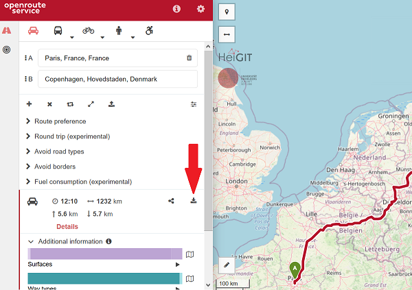
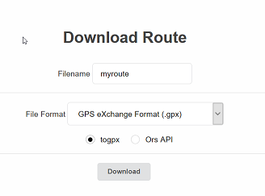
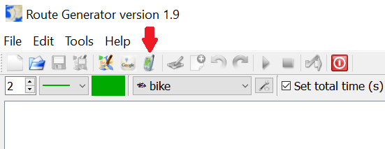
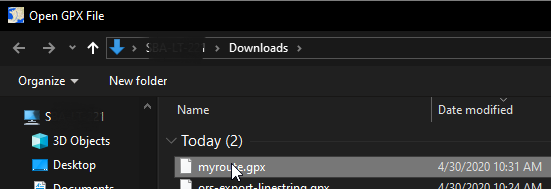
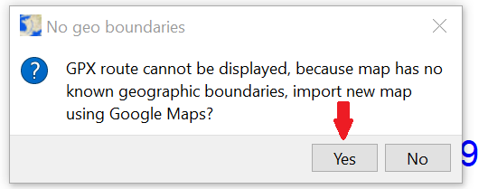
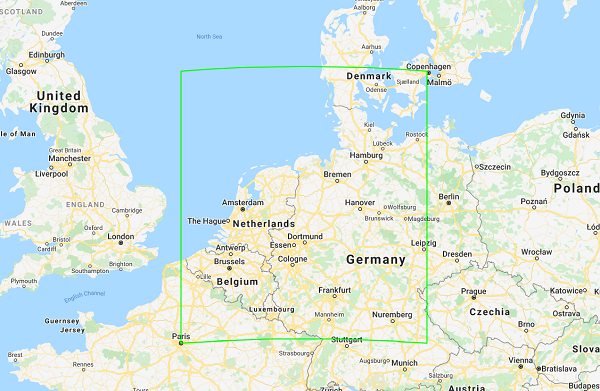
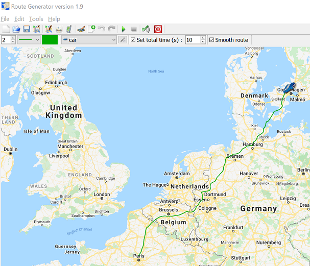

Convert route to GPX file and import in Route Generator
Since Route Generator is now able to import GPX files, you can also use this feature to convert a planned route (using e.g. openroute service) and convert it to a GPX file.
There are also tools available to convert a Google Maps KML/KMZ file to GPX. See for example: MyGeodata Converter or GPS Visualizer.
The example below shows how to export a route from openroute service and them import that route into Route Generator.
Go to openroute service and enter a source and destination and optionally modify the route. When ready, export the route to GPX.
|  |
| Click "Export Route" button (see red arrow). |
|  |
| Select "togpx", enter name for a route and click "Download". |
|  |
| In Route Generator, click the GPX import button on the toolbar. |
|  |
| Select the exported GPX file |
|  |
| When currenlty no map is loaded, the dialog above will be shown. Click "Yes" to go to Google Maps to select an appropriate map. |
|  |
| Zoom out until green rectangle (which shows the boundaries of your route) is fully visible. Then click OK and save your map. |
|  |
| Now your selected map and route will be loaded in Route Generator from which you can generate your movie. |